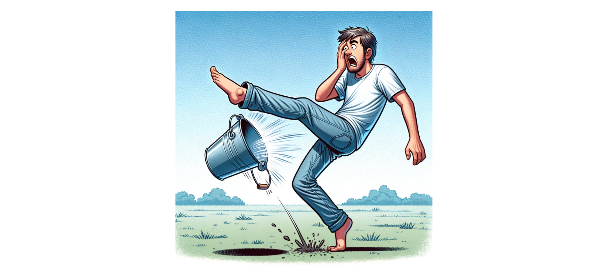
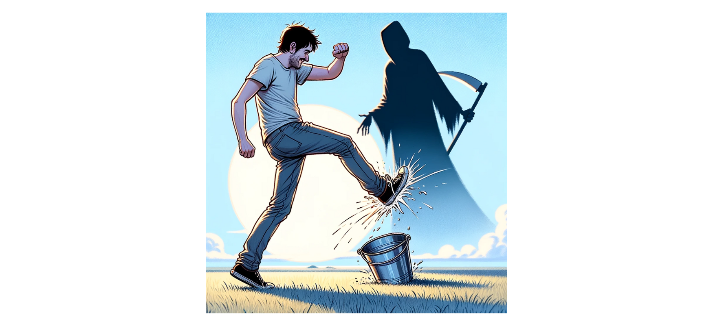
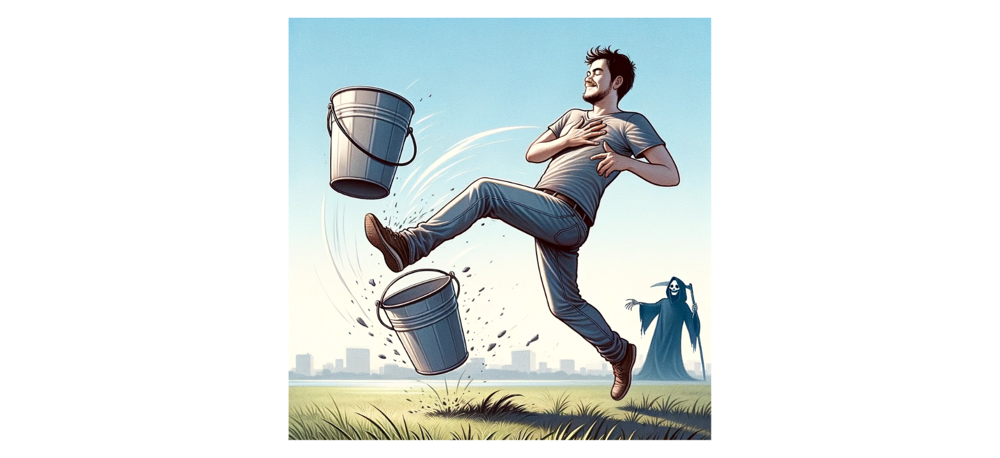

5 Ways to Use AI-Generated Images in Your Classroom
Interested in AI?
Check out the TESOL "AI in the English Language Classroom" Workshop
Led by an expert in the field, this highly interactive workshop will equip you with a starter kit of knowledge and tools to explore AI in your learning spaces. Live, online: 19-23 February 2024. Learn more and register today!
For as long as there’s been language teaching, there have been teachers cutting pictures out of magazines, asking students to draw pictures of their hometowns, taking photos of unique locations, saving CDs full of clipart, downloading photos from the web, and making use of just about every image they can get their hands on. Today, in the AI-enhanced classroom, we can build on all of our favorite picture-based activities and delve even further into creative possibilities.
While image generation is becoming commonplace among AI platforms, not all of them are free, and the ones that are free may have limitations. Please make sure you play around and find the right fit for you. Remember that most paid options also have some free versions to explore. A few of the more popular paid versions include ChatGPT Plus, Midjourney, and Canva, while many get use of the free image generation in Bing or Microsoft Designer.
1. Find the Connection
One of my favorite warm-ups is getting students to make connections between various images. In the past, I’ve spent time collecting images that are loosely threaded together, but I put it on the students to figure out what that connection is. Now, you don’t have to spend hours looking for photos and compiling them. Instead, you can run the following prompt with your chatbot of choice:
Create a grid of four images, connected in a way that's neither too easy nor too hard for the average person to guess.
Examples of output from ChatGPT 4 (left) and Microsoft Designer (right).
You can run the prompt right in front of them, or if you want to tie it to the lesson or themes you’re discussing, you can simply add in a small variation to the prompt like:
Create a grid of four images, connected to the idea of [friendship] in a way that's neither too easy nor too hard for the average person to guess.
Run the prompt just before class and have the image saved to your desktop to use.
Note that it doesn’t matter what the “right” answer is. The idea is to get students talking about the images. In the past, I’ve had students come up with great ideas that I never imagined myself when compiling the images!
2. Which One Doesn't Belong?
One of my favorite variations on Find the Connection is “Which One Doesn’t Belong?” The idea is the same, but one image is meant to be the outlier, not connected to the others. Use this prompt with the chatbot:
Create a grid of four images. 3 of the images should be connected in a way that's neither too easy nor too hard for the average person to guess. The 4th image should not be connected to the other 3. Randomize which image is not connected.
Examples of output from ChatGPT 4 (left) and Microsoft Designer (right).
Again, it doesn’t matter what answer the students choose, but that they are able to support their ideas through clearly articulated English or perhaps through using the grammatical function or vocabulary you are trying to get them to practice.
Certainly, there are endless ways to create variations on our favorite classics, but there’s a whole world of opportunities for students to build their language through image generation. Let’s look at a few examples.
3. Idiom Adventures
Idioms are a lot of fun, but sometimes they lead to confusion for students. They’ll ask fair questions like “Why is a piece of cake easy? Good cake is actually hard to make!” While one response is to look up the etymology together, you may find that there’s a lot of disagreement amongst linguists, even on the idioms we think are obvious.
Instead of worrying too much about where the terms came from, you can ask them to use image generation to help link the idiom to the meaning.
Here, I started simple:
Draw me a picture of a man "kicking the bucket"

The first image it generated didn’t seem to imply any sense of “death,” so I added a bit to try to get it to update:
OK, but I want it to link to the idiom of death. Can you show him dying at the same time?
(Note, ChatGPT initially refused because it claimed that showing a person dying isn’t appropriate, but immediately suggested that it could do it if it was “playful and fun.” Take from that what you will.)

It looked fine—there was a grim reaper figure in the background—but I didn’t get the sense that the character was about to leave this mortal coil. My response prompt:
This looks good, but please have him clutching his chest

Well, he was holding his chest, but maybe also falling in love? Finally, I added:
Good, but put a grimace on his face instead of a smile.

Alright! Notice that there might be better ways to link the image to the concept, but the real goal is that the student is using English and processing the meaning of the idiom over and over again until they get a result that makes sense. At the end of the day, we’re not looking for perfection, we’re looking for practice and comprehension.
4. GrammarGrams
Have students create their own visualizations of grammar concepts. If they want to show the past progressive, they might ask the image generator to show two actions in progress.
If they want to show something like the past tense, they might have the generator make two images of the same character at two points in time.
For this picture, a student might choose to describe it using the past progressive: My father was dancing when my mother became upset.
Here, students might be encouraged to use different language to get the bot to construct their image than they will use to describe it with their intended grammar. My prompt for the image was:
A man dancing a jig and a woman looking at him, frowning
There are lots of ways to play with grammar, of course. If your students want to show prepositions, for example, they can show how one item is positioned in relation to the other:
After creating the following image, a student can have several options to describe the image with prepositions:
Examples: “The giraffe is on the yellow box” or “The giraffe is between the blue boxes,” etc.
Art Dupes
One of the first activities I tried with image generation was to try to reproduce famous artworks by describing them and seeing what AI came up with. I often use Edvard Munch’s "The Scream" as a starting example because it’s abstract enough to require some thought, but clear enough to be able to describe it. The goal is for students to use descriptive language to try to replicate the image for themselves.

Edvard Munch’s "The Scream" (left), my AI-created image (right).
Here is the language that I used to create the image:
An abstract swirly orange oil painting of a bald man in black, standing on a pier with his hands on his cheeks looking shocked. The pier should have a vanishing point in the back left of the painting.
There’s a lot of advanced language in the prompt, so make sure your students don’t worry too much if they can’t get the images looking the same. The goal is to play with what they know, add to it, and have fun seeing the weird results that come out. Of course, you can use any art or picture you like, and it may even be appropriate to dip into whatever animation or art is trending with your students at the moment.
With a little creativity and willingness to play, you can start to see how many fun ways you can get students to build their language skills while exploring image creation.
Have you got variations you want to try? Totally different ideas that can help other teachers? Share them below! We’d love to see what you’re thinking!

About the author
Brent Warner is a professor of ESL at Irvine Valley College in California, and an educational technology enthusiast. He is co-host of the DIESOL podcast, the only podcast with a specific focus on EdTech in ESL. He frequently presents on the crossroads of technology and language learning, focusing on student engagement and developing learner autonomy. Brent likes his coffee black and his oranges orange. He can be found on LinkedIn at @BrentGWarner.